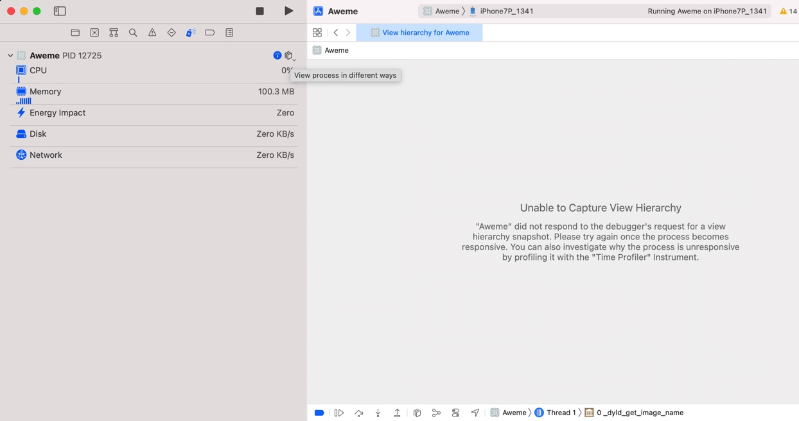

在不同视图之间切换：
在调试期间，新点击了：
Debug Memory Graph
Debug View Hierarchy
后，回不去调试的Thread了
后来发现了，是点击：
View process in different ways

即可看到几种方式：
View UI Hierarchy
切换到：
View Process by Thread
就是Debug默认的，常见的形式了：
以线程方式查看进程，其中能看到函数调用堆栈的内容：